地政学
バグダードはイラク国家の首都で、政府、議会、省庁、外交団、報道が集まる。湾岸、イラン、トルコ、シリア方面を結ぶ国内政治の結節点であり、地域秩序の緊張が街路の警備や抗議にも映る。国家の方向を測る場所だ。

🇮🇶 イラク / アジア / World City Atlas
チグリス川沿いに国家中枢、古い市場、宗教施設、大学、住宅地が重なるイラク最大都市。アッバース朝の記憶と近現代の戦争、石油国家の行政、日常の回復力を同時に読む首都。
都市の骨格
バグダードはアッバース朝の記憶を持つ歴史都市であり、現代イラクの政治と生活を受け止める首都でもある。川、橋、官庁、商業、信仰、戦争の記憶が同じ街路に重なる。
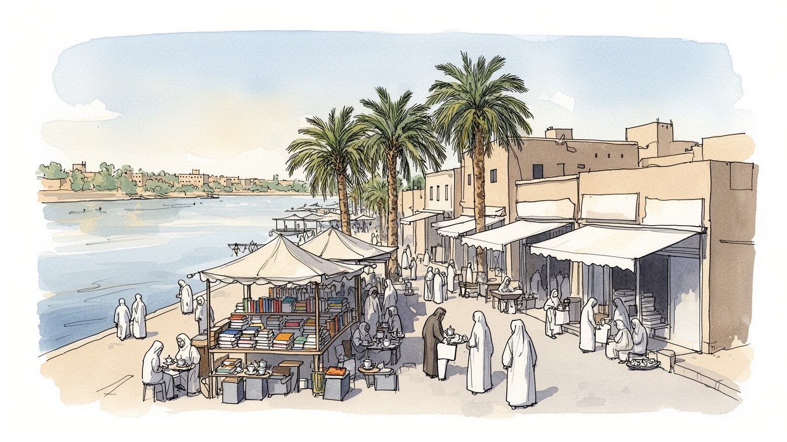
バグダードはイラク国家の首都で、政府、議会、省庁、外交団、報道が集まる。湾岸、イラン、トルコ、シリア方面を結ぶ国内政治の結節点であり、地域秩序の緊張が街路の警備や抗議にも映る。国家の方向を測る場所だ。
石油収入を扱う行政、商業、建設、医療、大学、小売、交通、食堂、修理業が雇用を作る。公務と非公式労働が近く、停電、水、治安、物価、若者の仕事探しが日々の働き方を左右する。今も家計の不安が街路に映る。
スンナ派、シーア派、キリスト教徒、少数派の記憶があり、モスク、教会、聖者廟、市場、書店、家庭料理が都市文化を支える。信仰は対立だけでなく、近所、弔い、祝祭、慈善を結ぶ。失われた記憶も日常に残り続ける。
観光客は博物館、市場、川辺、アッバース朝の遺産を訪ねるが、住民には通勤、家賃、電力、水、教育、医療、暑さが日々の条件になる。名所と生活の回復は分けられない。観光の回復も都市への信頼をゆっくり映す。
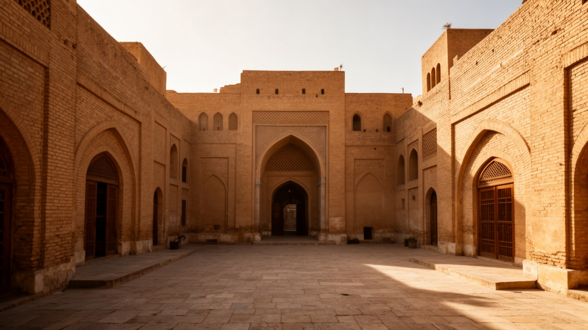
バグダードという名は、アッバース朝の円城、知恵の館、翻訳運動、商人、学者、詩人の記憶を呼び起こす。現在の街路に当時の都市形がそのまま残るわけではないが、世界の知を集め、アラビア語で再構成し、数学、医学、哲学、天文学、文学へ広げた都市の記憶は、いまもバグダードを語る土台である。この記憶は単なる黄金時代の装飾ではない。近代以降の戦争、制裁、政治暴力を経験した住民にとって、学問と都市文化の歴史は、破壊されたものを嘆くだけでなく、都市が再び知を生む場所であり得るという想像力にもなる。書店街、大学、博物館、家庭の蔵書、詩の朗読、新聞への議論は、遠い過去と現在の生活を細く結ぶ。外から訪れる人は遺産を古代や中世の輝きとして見がちだが、住民にとってそれは教育、誇り、言語、信仰、家族史とつながる日常の記憶でもある。失われた建物や盗まれた資料の痛みは深い。それでも、古い物語を現在の若者が読み直し、自分の都市を世界史の周縁ではなく中心の一つとして見ることには意味がある。バグダードの歴史を読むことは、栄光と喪失を並べるだけでなく、知識を守る制度、公共図書館、学校、研究者、職人、読者の関係を見直すことでもある。学校の教室や家の本棚にその記憶が残る時、歴史は遠い伝説ではなく、学び直す力になる。過去の名声は都市を自動的に救わないが、未来を考える言葉を与える。
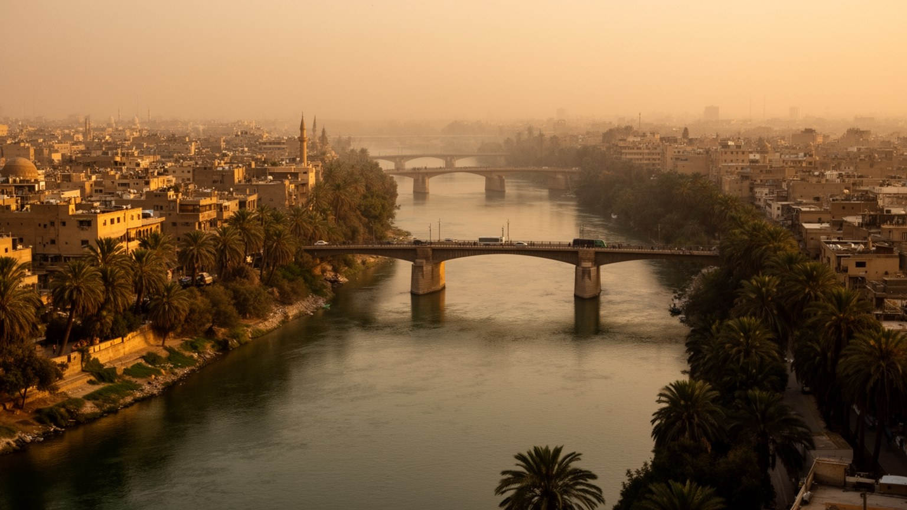
バグダードの都市骨格は、チグリス川と橋、平坦なメソポタミアの地形によって形作られている。川は古くから灌漑、交易、軍事、行政の軸であり、現代でも両岸の官庁、住宅地、市場、大学、病院を結ぶ目印である。水辺は涼しさと記憶を与えるが、上流の水管理、気候変動、汚染、低水位は生活の不安にもなる。現在の街は円形都市の伝承だけでなく、橋、幹線道路、環状道路、検問、郊外開発が重なった多中心の首都である。川を越える移動は通勤時間、商売、学校、医療へのアクセスを左右し、橋の混雑は都市の脈拍として経験される。低地の暑さは徒歩の距離を短くし、日陰、店先、屋内の涼しさを貴重にする。水と道路の配置は、どの地区が発展し、どの地区が公共サービスから遠いかも分ける。さらに川沿いの公共空間は、家族の散歩、釣り、屋台、記念写真の場になり、都市が戦争だけでなく余暇を取り戻す舞台にもなる。古い堤や新しい護岸、川沿いの茶店は、水辺が行政の境界であると同時に人が息をつく場所でもあることを示す。橋は生活の時間を測る。季節ごとの水位や砂嵐も、移動と商いの感覚を細かく変える。この地理は観光景観である前に生活の土台である。バグダードを読むには、チグリス川の美しさだけでなく、水、橋、道路、警備、暑さが日々の生活条件をどう決めるかを見る必要がある。
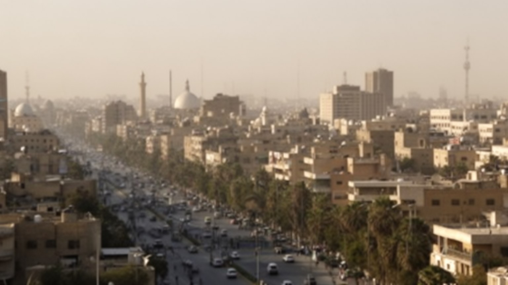
バグダードはイラク共和国の政治中枢であり、議会、省庁、政党、軍、治安機関、大使館、国際機関、報道が集まる。首都機能は建物の中だけでなく、検問、道路封鎖、抗議集会、追悼行事、選挙ポスター、警備車両として街路に現れる。サッダーム体制、2003年の侵攻、占領、宗派暴力、国家再建、民兵の影響、若者の抗議運動は、都市の記憶と政治感覚を深く変えてきた。権力が集中するほど、公共サービス、汚職、失業、電力、水、治安への不満も首都へ集まる。バグダードの政治を宗派対立だけで説明すると、行政を改善したい住民の要求、腐敗に怒る若者、家族を失った人の記憶、日常を取り戻したい商人の努力を見落とす。政府区域と一般の住宅地の間には物理的な距離だけでなく、信頼の距離もある。選挙や抗議のたびに、広場や橋は政治参加と警備の境界になる。省庁前の行列、行政書類、給与支払い、補償申請の遅れも、政治を生活の手触りに変える。地方から来る陳情者や求職者も首都に集まり、バグダードは国内の不満を受け止める窓口になる。国際機関や大使館の存在は復興支援をもたらす一方、主権や安全管理をめぐる複雑な感情も生む。制度への信頼は、窓口の対応や道路の開閉にも宿る。首都は国家の意思決定の場所であると同時に、国家に対する失望と期待が最も可視化される場所でもある。
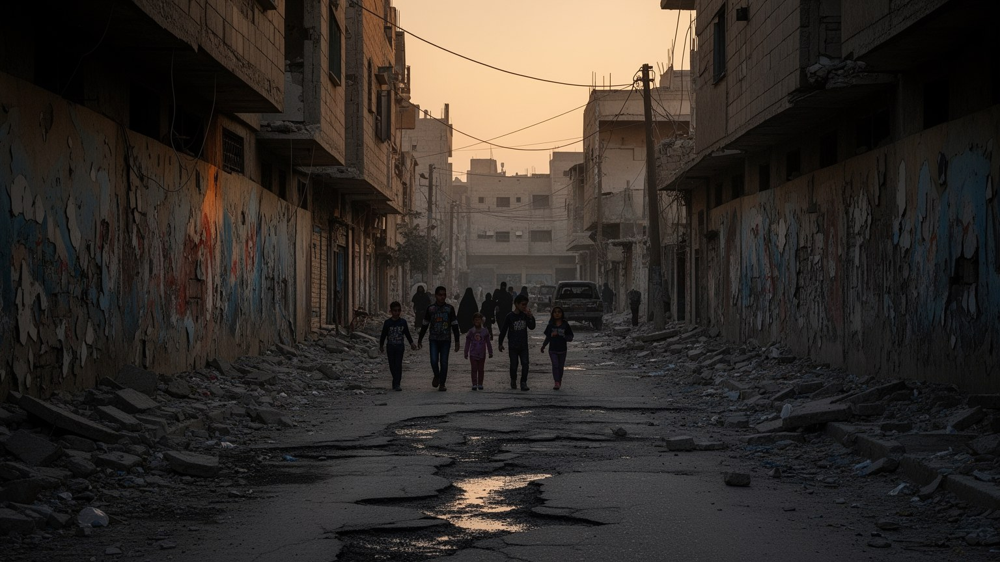
バグダードの近現代史は、戦争と制裁、独裁、侵攻、占領、爆発、宗派間暴力、避難、帰還の記憶なしには語れない。街には破壊された建物だけでなく、家族の喪失、消えた隣人、移住した親族、閉じた店、検問を通る習慣、夜の外出を控える記憶が残っている。暴力は都市を単に壊すのではなく、人がどの道を歩き、どの地区へ行き、誰を信頼し、何時に帰るかという日常の判断を変える。安全が改善しても、記憶はすぐには消えない。結婚式、葬儀、学校、商店、サッカー観戦、宗教行事は、日常を取り戻すための小さな回復の場でもある。被害の記憶は地区ごと、家族ごとに異なり、同じ出来事でも語り方は一つではない。慰霊や記録の不足は、失われた人の名前を家庭の記憶へ閉じ込めてしまうこともある。若い世代には直接の記憶が薄い人もいるが、親の沈黙、写真、避難の話、消えた友人の名前を通じて過去を受け取る。学校や博物館がこの記憶をどう扱うかは、次の世代が互いを信頼できるかにも関わる。追悼の場が整うことも、安心を取り戻す一部である。バグダードを危険の記号として見るだけでは、住民が積み上げてきた生活再建の時間を見落とす。記憶を読むとは、悲劇を消費することではなく、なぜ人びとが店を開け、子どもを学校へ送り、川辺を歩き、文化を続けるのかを理解することである。
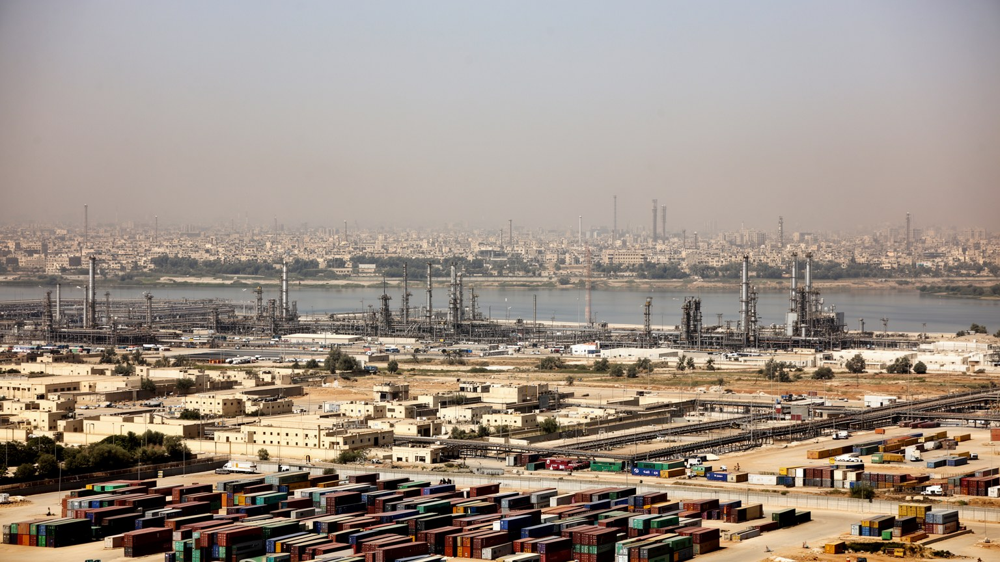
バグダードの経済は油田そのものより、石油収入を配分する国家行政、契約、銀行、建設、輸入商業、公共雇用によって大きく動く。省庁や国営企業の仕事は安定を求める家庭に重要だが、若者全員を吸収できるわけではない。街では公務員、技術者、医師、教員、警備員、運転手、露店商、修理工、配達員、食堂の従業員、建設労働者が重なって働く。石油国家の豊かさは、家庭の電気、水道、学校、病院、道路に十分届かない時、強い不満へ変わる。非公式経済は生活を支える一方、収入の不安定さや社会保障の弱さも抱える。女性や若者が安定した仕事を得にくいことは、家庭の将来計画を狭める。輸入品に頼る商業は為替や国境管理に揺れ、物価上昇は賃金の価値を削る。専門職の海外流出も課題で、医師、技術者、研究者が戻れる環境を作れるかが都市の競争力を左右する。民間企業を育てるには、電力、信用、法制度、治安がそろう必要があり、どれも生活インフラと重なる。契約の透明性や賃金の遅れは、働く意欲だけでなく政府への信頼にも影響する。バグダードの労働を読むには、GDPや石油価格だけでなく、停電時に発電機を回す人、炎暑の中で舗装を直す人、市場へ商品を運ぶ人、病院で夜勤する人を見る必要がある。都市の経済は国家予算の数字と、毎朝仕事を探す人の時間の両方で成り立つ。
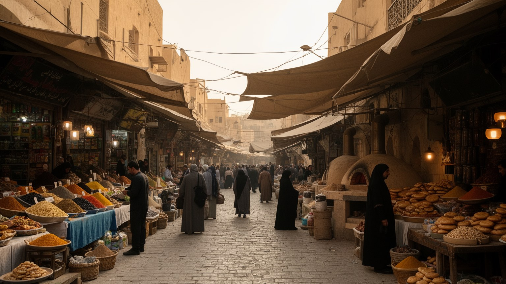
バグダードの文化を象徴する場所の一つが、書店、古書、カフェ、印刷、議論が集まるムタナッビー通りである。ここでは本が商品であるだけでなく、政治、詩、宗教、歴史、恋愛、亡命、戦争の経験を語る媒体になる。スークや商店街では、香辛料、布、金属製品、菓子、家庭用品、携帯電話、修理部品が並び、輸入経済と地域の手仕事が交差する。食卓にはマスグーフ、ドルマ、クッバ、米料理、甘い菓子、濃い茶があり、川魚、香辛料、家族の集まりが都市の味を作る。市場のにぎわいは、知識人だけのものではない。文具を買う学生、古い本を探す教師、家族連れ、露店、茶を運ぶ人、修理工、写真を撮る若者が同じ通りを使う。爆発や不安定な治安を経験しても、店を開けること自体が都市文化の継続を示す。市場では値段だけでなく、出身地、政治、家族の近況が交わされ、商売は情報網にもなる。料理の記憶は移住した家族を故郷へ結び直し、国外の食卓にもバグダードの味を残す。週末に本を探し、茶を飲み、川魚を分ける時間は、都市が自分を語り直す小さな公共圏でもある。食と本は、離散した家族にも都市の深い手触りを届ける。古い印刷所や製本の仕事も、知の風景を支える見えにくい労働である。文化は博物館だけに保存されるのではなく、毎週開く店先と、そこで交わされる言葉の中に残る。
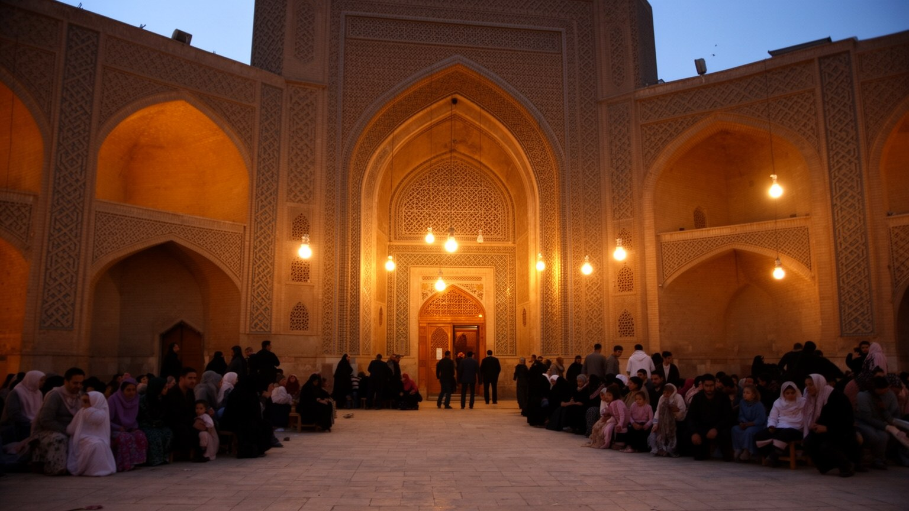
バグダードの宗教生活は、スンナ派とシーア派の区分だけでなく、家族、近所、職場、墓地、慈善、祝祭、弔いの実践として現れる。モスクは礼拝の場であると同時に、地域の相談、寄付、葬儀、教育、情報交換の場でもある。キリスト教徒、マンダ教徒、ヤジディ教徒など、イラク社会の多様な共同体も都市の記憶に関わってきたが、暴力や移住によって人口と存在感は大きく揺らいだ。宗教施設は時に対立の象徴として語られるが、日常では食を分ける、病人を見舞う、葬儀を支える、ラマダンやアーシューラーの時間を共有するなど、生活を結ぶ役割も担う。聖者廟や墓地を訪れる行為は、個人の祈りであると同時に、家族史を確認する時間でもある。宗教暦は商店の開閉、食卓、交通の混雑、寄付の季節を動かす。少数派の移住は、礼拝所だけでなく、学校、職人仕事、近所の記憶を都市から薄くしてしまう。共存を支えるのは大きな宣言より、隣人の弔問や商売の信用のような小さな反復である。地区の境界に残る不信を認めながら、日々の弔問や祝祭が関係を結び直すこともある。敬意ある記憶が必要だ。宗教を危険や政治動員だけに還元すると、住民が信仰を通じて互いを支える側面が見えなくなる。祈りと共同体を読むことは、都市がどのように信頼を壊され、また少しずつ回復していくのかを読むことでもある。
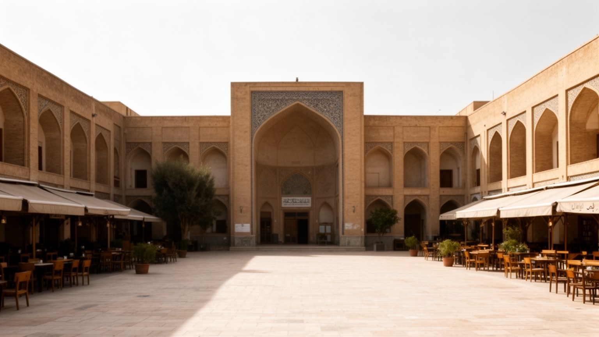
バグダードは大学、学校、専門職、芸術の都市でもある。バグダード大学をはじめとする高等教育機関、医学校、技術教育、図書館、研究者、教師は、政治の不安定さや財政制約の中でも次の世代を支えてきた。医師、技術者、教員、法律家、翻訳者、芸術家を育てる力は、石油収入だけでは作れない都市の資本である。だが教育の現場は、施設の老朽化、停電、教材不足、治安の記憶、若者の失業、専門職の国外流出に向き合っている。学生は卒業後の仕事を不安に思いながら、家族の期待、語学、資格、海外への進学、国内で働く責任の間で進路を選ぶ。文化面では、詩、ウード、マカーム、演劇、テレビ、新聞、風刺、サッカー、結婚式の歌が人びとの感情を受け止める。若い表現者は古い詩と新しい映像、伝統音楽とデジタル配信を行き来し、都市の声を更新している。教育と文化は別々の領域ではない。教室で読んだ詩がカフェの議論につながり、大学の友人関係が映画や音楽や市民活動の基盤になる。女子学生や地方出身の学生が安心して学べる環境も、都市の開かれ方を測る大切な条件である。バグダードを読むには、政治のニュースだけでなく、試験前の学生、夜に練習する音楽家、病院実習に向かう若者、子どもに本を買う親を見る必要がある。都市の将来は、傷の記憶だけでなく、学び続ける人が街に残れる条件を作れるかにかかっている。
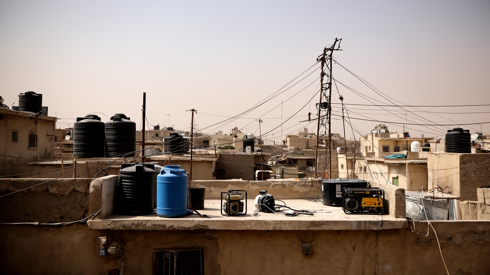
バグダードの日常生活は、家族の結びつき、近所づきあい、電力、水、通勤、学校、医療、暑さの管理によって組み立てられている。夏の猛暑では冷房と発電機が生活の条件になり、停電は勉強、仕事、介護、商売、食料保存に直結する。住宅地には中庭のある家、集合住宅、再建された建物、増築された住まい、避難や帰還を経験した家族の暮らしが混在する。家賃や土地価格は地区の安全、道路接続、公共サービスによって変わり、若い世帯には独立した住まいを持つことが難しい場合もある。女性の移動、子どもの通学、高齢者の通院は、交通と治安の感覚に強く左右される。家庭の内側では、親族が介護、就職、結婚、教育費を支え合う。近所の店や薬局は小さな相談窓口になり、公共サービスの不足を地域の関係が補うことも多い。夜の屋上、夕方の市場、学校帰りの路地は、都市がまだ人の居場所であることを示す。住まいの質は、暑さ、騒音、電力、家族の人数、親族の近さまで含めて評価される。結婚や進学の判断にも住宅事情は深く関わり、家の広さは家族の将来計画を左右する。バグダードの生活を読むには、英雄的な復興の言葉だけでなく、水を運ぶ手間、発電機の音、夕方の買い物、屋上の涼み、家族の食卓まで見る必要がある。都市の回復は高層ビルの数ではなく、安心して眠り、学校や病院へ行き、近所で挨拶できる日常が戻るかで測られる。
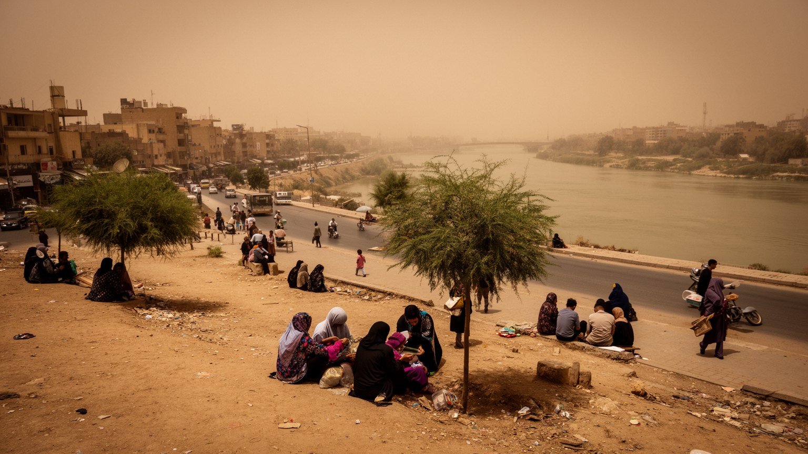
バグダードの気候と環境は、都市の未来を左右する大きな条件である。夏の極端な暑さ、砂嵐、乾燥、電力需要、水不足、排水の弱さ、廃棄物処理、大気汚染は、家計と健康に直接影響する。チグリス川は都市の象徴だが、上流国のダム、水利用、降水変化、汚染によって水量と水質が不安定になりやすい。暑さは屋外労働者、子ども、高齢者、慢性疾患を持つ人に重く、停電時には住宅の断熱や冷房の差が命に関わる。社会課題も気候と結びつく。失業、公共サービスへの不満、若者の将来不安、女性の安全な移動、国内避難民の定着、老朽インフラは、暑さや水不足でさらに厳しくなる。街路樹や公園、日陰の歩道は景観ではなく熱から人を守る設備である。水の不安は農村から都市への移動を促し、住宅や雇用の圧力を強める。学校の休校、病院の混雑、屋外労働の時間変更は、気候が社会制度まで変えることを示す。家庭用発電機の排気や騒音も、停電対策が別の環境負荷を生む例である。砂嵐の日の視界や呼吸の不安も、都市生活の現実として積み重なる。バグダードの環境対策は、川辺を美しくするだけでは足りない。安定した電力、清潔な水、日陰、公共交通、医療、学校、廃棄物管理を含む生活基盤の改善として考える必要がある。気候に強い都市とは、弱い立場の人が危険な暑さと水不足から守られる都市である。
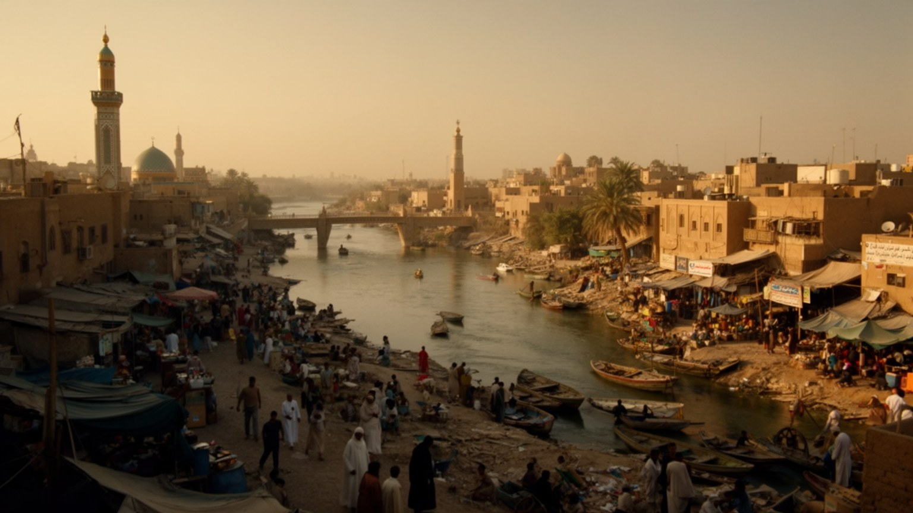
バグダードを理解するには、古代メソポタミアやアッバース朝の輝きだけでなく、現代イラクの政治、戦争の記憶、石油国家の配分、宗教共同体、若者の雇用、川と暑さ、住宅と公共サービスを同じ地図に置く必要がある。首都の建物は国家の権力を示し、市場は生活の粘り強さを示し、書店街は知の継続を示し、検問や封鎖は安全の代償を示す。バグダードは、壊された都市としてだけ見るには大きすぎ、黄金時代の遺産としてだけ見るには現在の苦労が重すぎる。住民は政治への不満を抱えながら、家族を支え、店を開き、学校へ通い、祈り、歌い、食卓を囲む。都市の重要性はGDPや人口だけでなく、イラク社会の希望と失望がここに集まることにある。外から見る人には、危険、宗派、戦争のイメージが強いかもしれない。しかし街の実体は、傷跡の上で生活を組み直す無数の判断からできている。橋を渡る通勤者、書店の店主、病院の看護師、大学生、祈りに向かう家族は、それぞれ違う方法で都市を続けている。世界都市としてのバグダードの意味は、資本の華やかさより、破壊後の社会がどのように公共性を再建するかを示す点にある。その再建は大きな計画だけでなく、水、電力、学校、礼拝、商いの信頼を少しずつ戻す作業でもある。バグダードを読むことは、都市が破壊の後に何を失い、何を守り、どのように尊厳を取り戻そうとしているのかを読むことである。